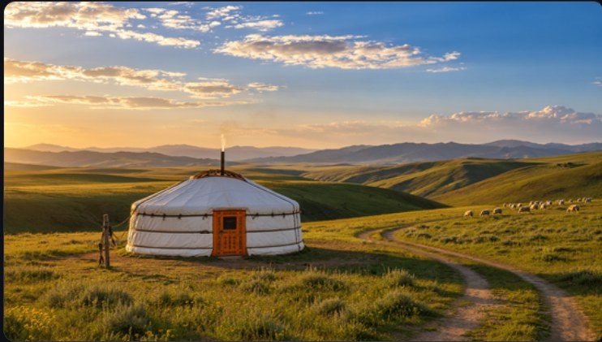
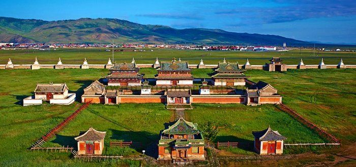
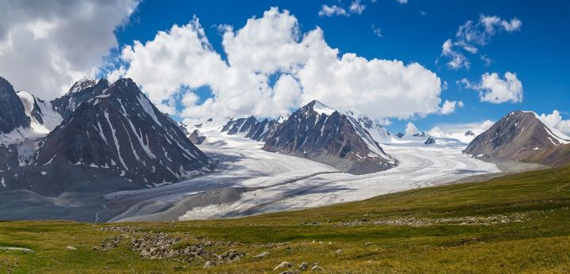

ゴビ
ホンゴル砂丘、バヤンザグ、ヨリーンアム。夜には満天の星が広がります。
ベストシーズン：5〜9月ゲル、ゴビの砂丘、青い湖、広大な草原。モンゴルの旅をここで計画しよう。
行き先を見る
4つの異なる風景、4つの異なる体験。
ホンゴル砂丘、バヤンザグ、ヨリーンアム。夜には満天の星が広がります。
ベストシーズン：5〜9月
「母なる海」と呼ばれる青い湖。針葉樹の森とトナカイ遊牧民の地。
ベストシーズン：6〜9月、2〜3月（氷上）
エルデニ・ゾー寺院、オルホン渓谷、ウラーン・ツォトガラン滝。歴史ある土地です。
ベストシーズン：5〜9月
万年雪の山々、カザフ族の鷲使い、川沿いの谷。
ベストシーズン：7〜9月、9〜10月（鷲祭り）季節を選んで、できることを見てみよう。